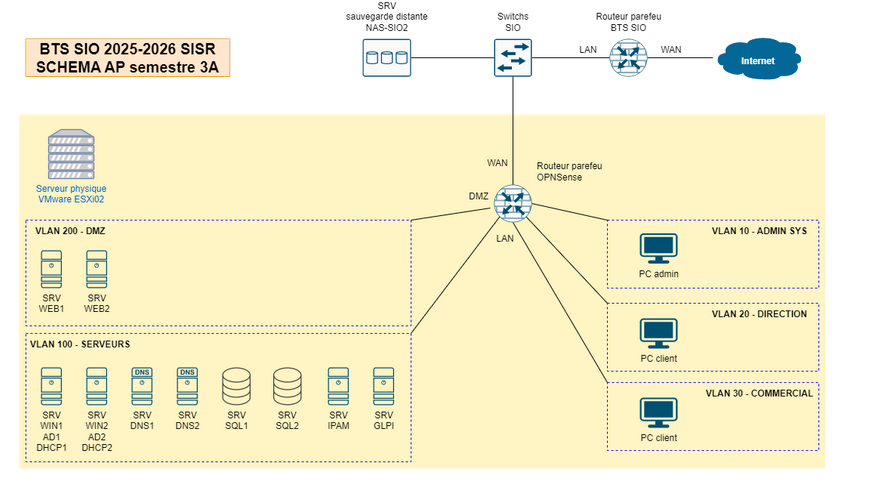
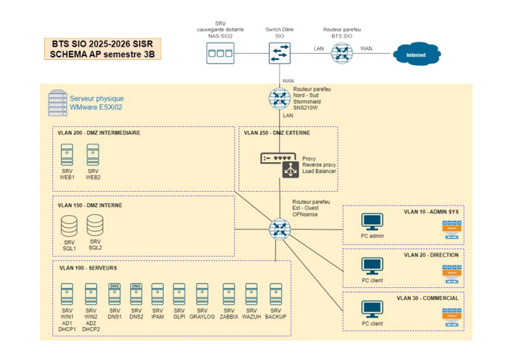

💻 Projets

Projet Egnaro
Premier projet : créer un réseau pour l'entreprise fictive Egnaro. Infrastructure avec routeurs, switches, clients légers, WiFi et 6 VM (3 serveurs Web, RDP, DHCP, client).

Projet Geltram
Deuxième projet : infrastructure complète avec serveurs, clients, services répartis sur 3 VLANs, serveur WEB, HoneyPot, WSUS, AD (DNS/DHCP), Wiki, GLPI, FOG, PfSense + Snort.


Projet GSB
Projet de deuxième année : haute disponibilité et réplication des services pour Galaxy Swiss Bourdin.